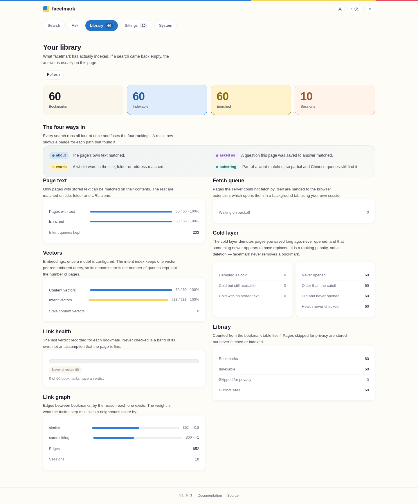
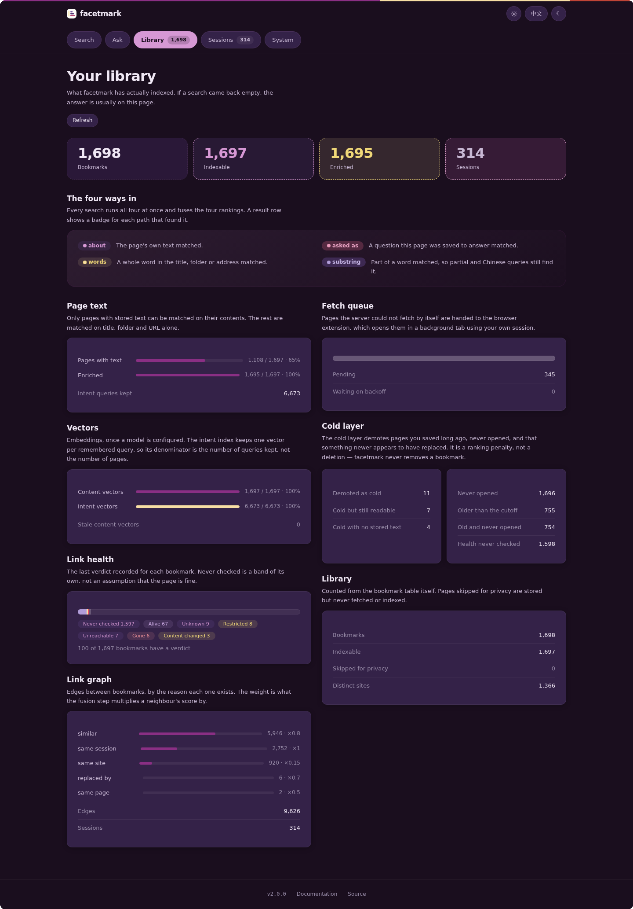

01Install it
You need Python 3.10 or newer, on Windows, macOS or Linux. Check with python --version; if that prints 3.9 or an error, install Python first from python.org.
pip install facetmarkThat is the whole install. There is no separate server to run, no database to create, no account to make. Confirm it landed:
facetmark --versionpip installed it somewhere that is not on your PATH. python -m facetmark --version works regardless, and every command on this page can be written that way.
02Bring your bookmarks in
On Chrome, Edge, Brave, Vivaldi, Chromium or Opera you do not have to export anything. Close the browser first — it holds the file open — then:
facetmark importIt finds the profile, reads the bookmarks file and prints how many it took. Firefox and Safari are not in that family, so those two need a one-off export to HTML first (how to do that) and then the path:
facetmark import ~/Downloads/bookmarks.htmlImport is a one-way read: open the file, read it, close it. Nothing in facetmark writes to a browser profile, and nothing you do here can change or delete a bookmark you have.
03Point it at a model — or skip this
Searching “by meaning” needs something that turns text into numbers. You have three ways to get one, and the third is to do without.
A hosted API
Any OpenAI-compatible endpoint. Put this in ~/.facetmark/.env — the file is created for you on first run:
FACETMARK_API_BASE=https://api.openai.com/v1
FACETMARK_API_KEY=sk-your-keyThe base URL must end in /v1. Without it every model call returns 404, and the error surfaces as a provider error, so it reads like a bad key.
A model on your own machine
No key, nothing leaves the machine except the page fetches themselves:
FACETMARK_EMBED_BACKEND=localThis downloads a small sentence-transformers model the first time it runs.
Neither
Skip this step entirely and you still get keyword search over titles, folders and addresses, plus the session graph — which of your bookmarks were saved in the same sitting. You lose search by meaning. You can add a model later and re-run the next step; nothing has to be redone.
04Build the index
This is the slow step, and the only slow step. It fetches each page, extracts the text, summarises it if you configured a chat model, embeds it, and works out which bookmarks were saved together.
facetmark indexWall time is dominated by fetching, not by models: facetmark honours robots.txt and rate-limits itself per site on purpose. A few thousand bookmarks is a coffee, not a second. In a hurry, or just want to see it work:
facetmark index --no-fetchThat indexes titles only and finishes in seconds. Run facetmark index properly later — it is idempotent, so it picks up exactly the work that is still missing and skips everything already done.
Progress is written as it goes. Interrupting with Ctrl+C loses at most the page in flight, and re-running continues rather than restarting.
05Open the page
facetmark serveIt prints the address. Open the second line in a browser:
facetmark 1.6.1 http://127.0.0.1:8787
open the search page: http://127.0.0.1:8787/appThat is the whole interface. Type a question the way you would say it out loud — you do not have to remember the title, and you do not have to get the words right.


The second view answers the question everybody has at this point — did that actually work? Click Library in the header.


facetmark index has not finished. If Bookmarks is zero, the import did not land.facetmark serve is a foreground process; the page only works while it is up. It binds 127.0.0.1, which means your machine and nothing else on the network. The browser extension, the API and MCP clients all talk to this same process — see the guide.
06Read a result
Each row says why it is there. Hovering a marker explains it in the page; this is the same thing in one table.
| On the row | Means |
|---|---|
| about | The page’s own text matched — by meaning, not by keyword. This is the one that finds a page whose words you do not remember. |
| words | A whole word in the title, folder or address matched. |
| substring | Part of a word matched, which is what makes half-typed and Chinese queries work. |
| asked as | A question this page was saved to answer matched. |
| cold | Saved long ago, never opened, and something newer looks like it replaced it. Pushed down the list, never deleted. |
Below the ranked list there is sometimes a second, separate group headed saved around these. Those are not answers to your query — they are pages you saved in the same sitting as something above, which is often how you actually remember where a page was. They are kept apart on purpose and never mixed into the ranking.
Load more at the bottom fetches the next page of the same ranking rather than searching again, so the order you have already read cannot shuffle underneath you. The counter above the list says which slice you are looking at.
07When it goes wrong
The page says it needs a token
You are not reaching it over 127.0.0.1 — a LAN address, a hostname or a reverse proxy all look the same to the check. Run facetmark token, paste the value into the field once, and the browser remembers it. Why that check exists.
The page will not load at all
facetmark serve has to still be running in a terminal. If it exited with address already in use, something else has 8787: run facetmark serve --port 8788 and open that port instead.
Search finds nothing, or only exact words
Open Library. Content vectors at zero means search by meaning is not on: no model configured, or facetmark index has not run to completion. A non-empty fetch queue means indexing is still working through your library and results will keep improving.
Every model call returns 404
The base URL is missing /v1. This is the most common failure by a wide margin.
Where is my data?
One folder: ~/.facetmark on macOS and Linux, %USERPROFILE%\.facetmark on Windows. Inside it is a single SQLite file plus the pairing token. Move it, back it up, or copy it to another machine — it is the whole state. FACETMARK_DATA_DIR puts it somewhere else.
How do I delete everything?
Delete that folder. There is no uninstall step and nothing outside it — no registry keys, no browser changes, no account anywhere. pip uninstall facetmark removes the program.
Something else
facetmark stats prints what the index actually contains, which resolves most confusion, and the guide has a longer troubleshooting list. Beyond that, open an issue.